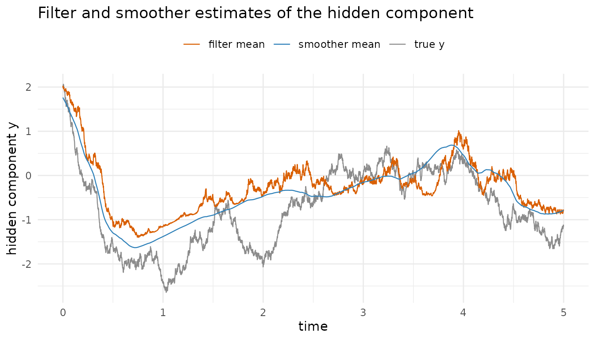
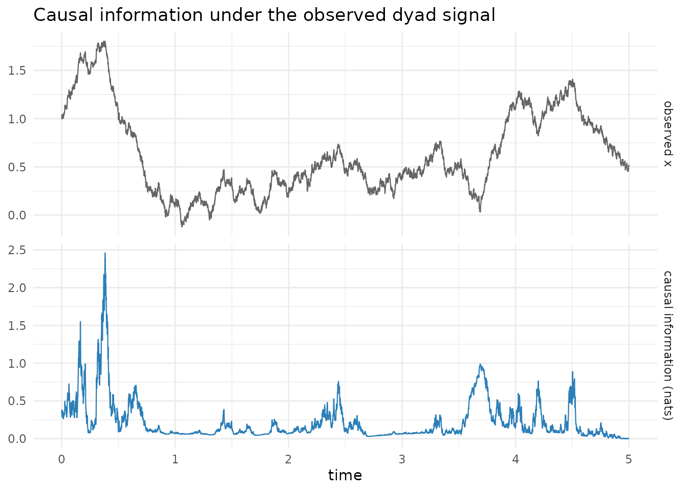

Overview
Assimilative causal inference (ACI) quantifies, step by step, how strongly an observed signal carries information about an unobserved component of the same system. The idea rests on data assimilation. A forward filter estimates the hidden component from the observed path seen so far, a backward smoother estimates it from the whole observed path, and the causal-information metric reads off how much the future of the observed signal sharpens the estimate at each moment. The method reimplemented here is due to Andreou, Chen and Bollt (2026).
This vignette walks through the whole workflow on the nonlinear dyad model with intermittent extreme events, the conditional Gaussian nonlinear system that the reference implementation uses as its worked example.
The nonlinear dyad model as a conditional Gaussian nonlinear system
A conditional Gaussian nonlinear system (CGNS) pairs an observed process with an unobserved process whose statistics, conditional on the observed path, are Gaussian and available in closed form. The dyad model is the CGNS governed by the pair of stochastic differential equations
The observed process couples to the hidden process through the state-dependent term . That feedback is what makes intermittently extreme, since the bursts in the observed signal are driven by the hidden component. The drift of is linear in , which is the structural condition that keeps the conditional statistics of Gaussian and gives the filter and smoother their closed forms.
The constructor aci_dyad_model() builds the model object
with the reference parameters.
model <- aci_dyad_model()
model
#> <aci_model> nonlinear dyad model with intermittent extreme events
#> unobserved self-drift L_y: -0.5
#> noise Grammians: S_xoS_x = 0.25, S_yoS_y = 1, S_yoS_x = 0
#> initial state: x0 = 1, y0 = 2
#> parameters: d_x = 0.5, d_y = 0.5, gamma = 2, F_x = 0.5, F_y = 1, sigma_x = 0.5, sigma_y = 1The causal question
The dyad model is built so that the hidden drives the observed . The question ACI answers is not merely whether that coupling exists but when it is informationally active. At which moments does watching the future of tell us something new about that its past alone did not?
ACI answers this by contrasting two estimates of the hidden component. The filter posterior of conditions on the observed path up to time . The smoother posterior conditions on the whole observed path, past and future. The causal-information metric is the relative entropy (Kullback-Leibler divergence) of the smoother posterior from the filter posterior at each step, and it is non-negative. Where it is large, assimilating the future of the observed signal has revised the estimate of sharply, which marks a step of strong causal coupling.
Simulate a realisation
aci_simulate() integrates the model’s equations by an
Euler-Maruyama step and returns the observed process
together with the hidden process
.
Because the hidden
is known in a simulation, it can be laid alongside the inferred
estimates as a ground truth. That check is never available with real
data.
sim <- aci_simulate(model, n = 5000, seed = 333)
head(sim)
#> t x y
#> 1 0.000 1.0000000 2.000000
#> 2 0.001 1.0026906 2.017046
#> 3 0.002 1.0373242 2.002320
#> 4 0.003 1.0090259 2.033431
#> 5 0.004 1.0175164 2.056711
#> 6 0.005 0.9975656 2.059818Run assimilative causal inference
aci() is the single entry point. It assembles the
conditional Gaussian components from the model and the observed signal,
runs the forward filter and the backward smoother, and scores each step
with the causal-information metric.
fit <- aci(sim$x, model)
fit
#> <aci> assimilative causal inference
#> model: nonlinear dyad model with intermittent extreme events
#> steps: 5000, dt: 0.001, time span: [0, 4.999]
#> causal-information metric:
#> Min. 1st Qu. Median Mean 3rd Qu. Max.
#> 0.00000 0.06962 0.11010 0.22070 0.25589 2.45911The returned aci object holds the model, the observed
signal, the filter and smoother statistics
(each a list of the posterior mean and cov of
the hidden component) and the causal-information metric in
aci.
The filter and the smoother
The filter and the smoother both estimate the hidden , but from different information. The filter uses only the past of the observed signal, so its estimate is what a real-time observer would hold. The smoother uses the whole record, so it is the retrospective estimate. Plotting both against the true hidden path shows the smoother tracking more closely, most visibly where the two estimates part company.
library(ggplot2)
estimates <- data.frame(
t = fit$t,
truth = sim$y,
filter = fit$filter$mean,
smoother = fit$smoother$mean
)
ggplot(estimates, aes(x = t)) +
geom_line(aes(y = truth, colour = "true y"), linewidth = 0.4) +
geom_line(aes(y = filter, colour = "filter mean"), linewidth = 0.4) +
geom_line(aes(y = smoother, colour = "smoother mean"), linewidth = 0.4) +
scale_colour_manual(
values = c(
"true y" = "grey55",
"filter mean" = "#d95f02",
"smoother mean" = "#2c7fb8"
)
) +
labs(
x = "time",
y = "hidden component y",
colour = NULL,
title = "Filter and smoother estimates of the hidden component"
) +
theme_minimal() +
theme(legend.position = "top")
The causal-information metric
The metric itself is a time series. Laying it under the observed signal shows where the two align. The spikes in causal information sit at the intermittent bursts of the observed , which is exactly where the hidden is driving the observed process hardest and where the future of is most informative about . The two series get a panel each because they are incommensurable. The signal is in its own units and the metric is in nats, so it is the timing that aligns between the panels, never the magnitudes.
series <- rbind(
data.frame(t = fit$t, series = "observed x", value = fit$x),
data.frame(t = fit$t, series = "causal information (nats)", value = fit$aci)
)
series$series <- factor(
series$series,
levels = c("observed x", "causal information (nats)")
)
ggplot(series, aes(x = t, y = value, colour = series)) +
geom_line(linewidth = 0.4, show.legend = FALSE) +
facet_grid(rows = vars(series), scales = "free_y") +
scale_colour_manual(
values = c(
"observed x" = "grey40",
"causal information (nats)" = "#2c7fb8"
)
) +
labs(
x = "time",
y = NULL,
title = "Causal information under the observed dyad signal"
) +
theme_minimal()
The summary() method reports the metric alongside two
diagnostics that say whether the numerical assumptions held. The
smallest posterior covariances show how close the explicit Euler scheme
came to losing positivity. The terminal-identity residual is zero
analytically, so it measures accumulated numerical error.
summary(fit)
#> <summary.aci> assimilative causal inference
#> model: nonlinear dyad model with intermittent extreme events
#> steps: 5000, dt: 0.001, time span: [0, 4.999]
#>
#> causal-information metric:
#> Min. 1st Qu. Median Mean 3rd Qu. Max.
#> 0.00000 0.06962 0.11010 0.22070 0.25589 2.45911
#> peak 2.45911 at time 0.382
#>
#> diagnostics:
#> smallest covariance: filter 0.1, smoother 0.0682916
#> terminal identity residual: 0 (zero analytically)
#> round-off clamps to zero: 0 of 5000 stepsEvery series is available in one frame with
as.data.frame(), which is the tidy starting point for a
figure or an export.
head(as.data.frame(fit), 3)
#> t x filter_mean filter_cov smoother_mean smoother_cov aci
#> 1 0.000 1.000000 2.000000 0.100000 1.762218 0.06829162 0.3148517
#> 2 0.001 1.002691 1.996953 0.100740 1.757918 0.06859492 0.3162065
#> 3 0.002 1.037324 2.019695 0.101476 1.753615 0.06889378 0.3819316The peaks carry a bounded reading. The metric says that under this model the future of the observed signal is informative about the hidden component at those moments. It does not test the model, and it does not identify the effect of an intervention. Here the dyad model is also the process that generated the data, so the reading holds without further argument. On real data the model is an assumption rather than a fact, and the article Assumptions and interpretation sets out which claims an ACI peak supports and which it does not.
The quantity plotted above is a relative entropy between two posteriors over the same instant, the one informed by the whole observed record and the one informed only up to that instant.
The Gaussian closed form this reduces to, and the identities it is graded against, are in the companion article Validation and the independent oracle.
One scope note closes the walk-through. This vignette covers the
causal-information metric, which answers how much the future of
the observed signal says about the unobserved state. The paper defines a
second quantity, the causal influence range, which answers how far
ahead one must look before that answer stops changing. That
quantity is implemented as aci_cir() and graded against the
same reference. It is not covered here because it asks a different
question rather than extending this one, and ?aci_cir is
where to begin on it.
The general components path
aci() is a convenience layer over three core functions
that work on any conditional Gaussian nonlinear system rather than on
the dyad model alone. Each takes a components list, the per-step
coefficients of the governing equations, so the same core serves a
custom system once its components are supplied. For the dyad model,
aci_dyad_components() builds that list from the observed
signal, and the filter, the smoother and the metric can be called in
turn.
comp <- aci_dyad_components(sim$x, model$parameters)
filt <- aci_filter(sim$x, comp, dt = 0.001, mu0 = 2, R0 = 0.1)
smooth <- aci_smoother(sim$x, comp, dt = 0.001, filt)
metric <- aci_metric(filt, smooth)
summary(metric)
#> Min. 1st Qu. Median Mean 3rd Qu. Max.
#> 0.00000 0.06962 0.11010 0.22070 0.25589 2.45911This is the general form of the workflow. For a conditional Gaussian
nonlinear system of one’s own, aci_cgns_model() builds the
model object and aci() runs the same three steps.
References
Andreou, M., Chen, N. and Bollt, E. (2026). Assimilative causal inference. Nature Communications, 17, 1854. https://doi.org/10.1038/s41467-026-68568-0